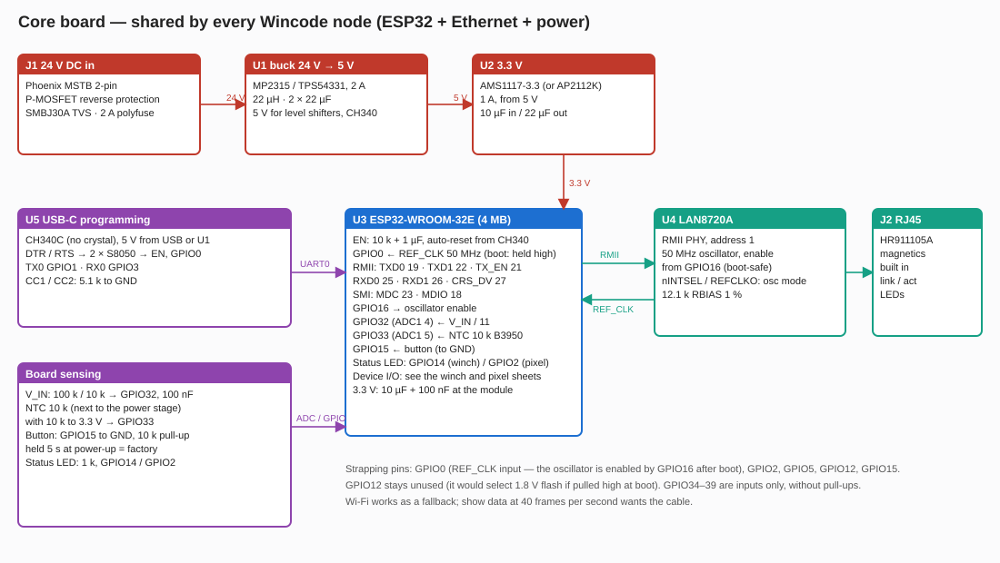
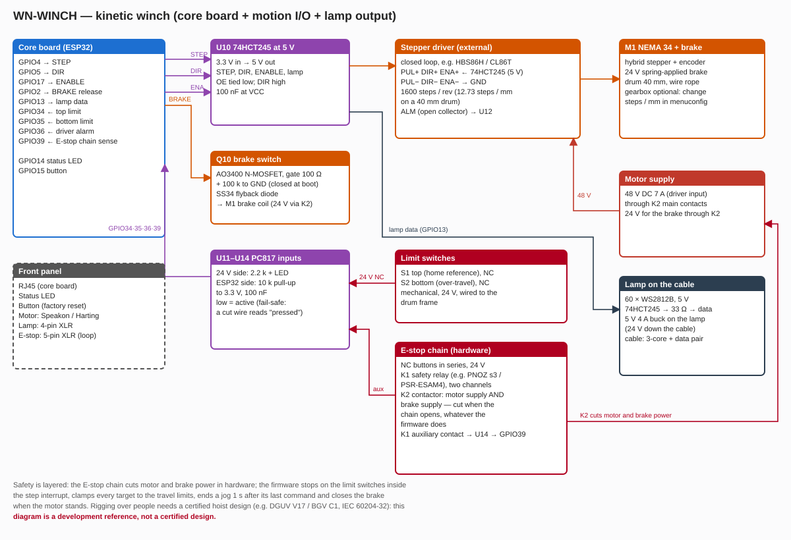
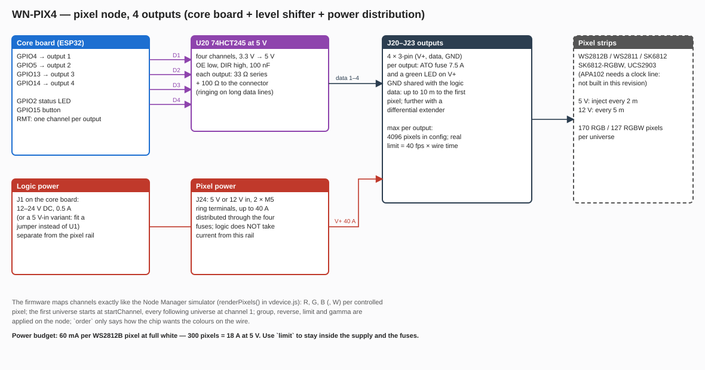
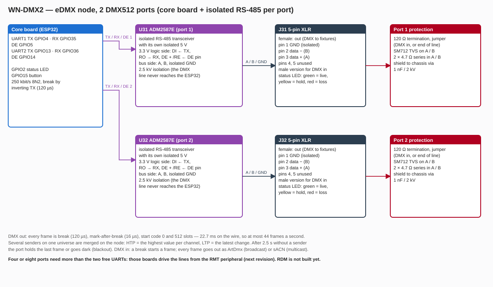

Wincode Node Hardware Circuit diagrams and ESP32 firmware for the nodes the Wincode Node Manager configures
1. Overview
Every node is the same core board — an ESP32 with Ethernet, power and the board sensing — plus the I/O of its type. One firmware source builds every type; the type is chosen when the firmware is built. The firmware speaks the device API of the Node Manager (DEVICE-API.md, version 1) and takes show data as Art-Net or sACN.
WN-WINCH
Kinetic winch: a stepper motor with brake follows a 16-bit DMX position; a 60-pixel lamp hangs on the cable. Limit switches, a hardware E-stop chain, homing.
Kinetic winch: a stepper motor with brake follows a 16-bit DMX position; a 60-pixel lamp hangs on the cable. Limit switches, a hardware E-stop chain, homing.
WN-PIX4
Pixel node: four WS2812B / WS2811 / SK6812 / SK6812-RGBW / UCS2903 outputs, up to 4096 pixels each, with per-output fuses.
Pixel node: four WS2812B / WS2811 / SK6812 / SK6812-RGBW / UCS2903 outputs, up to 4096 pixels each, with per-output fuses.
WN-DMX2
eDMX node: two isolated DMX512 ports, Art-Net / sACN to DMX with HTP / LTP merge and signal-loss behaviour, or DMX in to the network.
eDMX node: two isolated DMX512 ports, Art-Net / sACN to DMX with HTP / LTP merge and signal-loss behaviour, or DMX in to the network.
Simulator first
The Node Manager's virtual devices run the same behaviour (
The Node Manager's virtual devices run the same behaviour (
vdevice.js). Its Simulator tab shows what this hardware will do with the same DMX.| Path | What |
|---|---|
| Node Manager ↔ node | Discovery: UDP 7788 (JSON). Configuration, status, commands: HTTP + JSON on port 80. |
| Console → node | Art-Net (UDP 6454, ArtDmx; ArtPoll is answered) and sACN / E1.31 (UDP 5568, multicast). Both are accepted, whichever the configuration names. |
| Network | Ethernet (LAN8720, 100 Mbit/s) first; Wi-Fi station as a fallback when the firmware is built with a network name. |
2. Core board

ESP32 pins
| GPIO | Use | Note |
|---|---|---|
| 0 | RMII REF_CLK in (50 MHz) | Strapping pin: the oscillator is enabled by GPIO16 only after boot |
| 1 · 3 | UART0 TX · RX | USB-C via CH340C, auto-reset by DTR / RTS |
| 16 | Oscillator / PHY enable | High = on |
| 18 · 23 | MDIO · MDC | PHY address 1 |
| 19 · 22 · 21 | TXD0 · TXD1 · TX_EN | Fixed by the ESP32 EMAC |
| 25 · 26 · 27 | RXD0 · RXD1 · CRS_DV | Fixed by the ESP32 EMAC |
| 32 (ADC1 4) | Supply voltage | 100 k / 10 k divider |
| 33 (ADC1 5) | Temperature | NTC 10 k B3950 to GND, 10 k to 3.3 V; alarm above 75 °C |
| 15 | Button | Held 5 s at power-up: factory settings, DHCP on |
| 14 / 2 | Status LED | Fast blink = identify · slow blink = no network · on = running |
| 12 | — unused | Strapping pin (flash voltage): keep free |
Core bill of materials
| Ref | Part | Qty |
|---|---|---|
| U3 | ESP32-WROOM-32E, 4 MB (or a WT32-ETH01 module, which carries U3, U4 and J2) | 1 |
| U4 | LAN8720A-CP + 50 MHz oscillator with enable, 12.1 k 1 % RBIAS | 1 |
| J2 | HR911105A RJ45 with magnetics | 1 |
| U1 | MP2315 or TPS54331 buck 24 V → 5 V, 2 A | 1 |
| U2 | AMS1117-3.3 (or AP2112K-3.3) | 1 |
| U5 | CH340C, USB-C receptacle, 2 × S8050, 2 × 5.1 k | 1 |
| J1 | Phoenix MSTB 2-pin, P-MOSFET (AO3401), SMBJ30A, 2 A polyfuse | 1 |
| — | NTC 10 k B3950, 100 k / 10 k / 10 k resistors, button, LED, decoupling | — |
The quickest prototype is a WT32-ETH01 (ESP32 + LAN8720 + RJ45 on one module, oscillator enable on GPIO16): it matches these pins. Add the 5 V supply, the level shifter and the device I/O on a carrier board.
3. WN-WINCH — kinetic winch

Pins
| GPIO | Signal | Circuit |
|---|---|---|
| 4 | STEP | 74HCT245 at 5 V → driver PUL+ (PUL− to GND). Pulse 4 µs, up to 25 kHz |
| 5 | DIR | 74HCT245 → DIR+; high = cable out (down), changeable in menuconfig |
| 17 | ENABLE | 74HCT245 → ENA+; low = enabled |
| 2 | Brake release | AO3400 N-MOSFET, 100 k gate pull-down (brake closed at boot), SS34 flyback |
| 13 | Lamp data | 74HCT245 → 33 Ω → lamp cable |
| 34 | Top limit (home) | NC switch, 24 V → PC817 → 10 k pull-up; low = pressed |
| 35 | Bottom limit | as above |
| 36 | Driver alarm | Driver ALM (open collector) → PC817; low = fault → alarm stall |
| 39 | E-stop chain | Safety relay auxiliary contact → PC817; low = chain open → alarm estop |
How the firmware moves the winch
- Position is kept in motor steps from the top reference and converted with steps per millimetre (default 12.73: 1600 steps per revolution on a 40 mm drum).
- DMX: two channels at
address, coarse then fine; 0 =travel.min(top), 65535 =travel.max;invertswaps the ends. After 2.5 s without data:holdorhome. - Ramp: a 1 kHz task runs a trapezoid profile with
speedMaxandaccel(used for braking too); a hardware timer makes the step pulses. - Manual control (Home, Jog, Go to, Stop) wins over DMX until Release. A jog stops by itself one second after its last command.
- Homing: up at the homing speed until the top switch closes; that point is 0 mm. Until the winch is homed it ignores DMX (alarm
nothomed) — switch that off in menuconfig only for a bench test. - Inside the step interrupt: no step towards a pressed limit switch, none while the E-stop chain is open, none above 0 mm except while homing.
- Brake: released 80 ms before the first step, closed 0.5 s after the motor stopped.
Winch bill of materials
| Ref | Part | Qty |
|---|---|---|
| — | Core board | 1 |
| U10 | 74HCT245 | 1 |
| U11–U14 | PC817, 2.2 k (24 V side), 10 k pull-ups, 100 nF | 4 |
| Q10 | AO3400, SS34, 100 Ω, 100 k | 1 |
| Driver | Closed-loop stepper driver, 48 V (HBS86H, CL86T or similar) | 1 |
| M1 | NEMA 34 closed-loop stepper with 24 V spring-applied brake, drum 40 mm, wire rope | 1 |
| S1, S2 | Mechanical limit switches, NC | 2 |
| K1 | Two-channel safety relay (PNOZ s3, Phoenix PSR-ESAM4 or similar) | 1 |
| K2 | Contactor, motor and brake supply | 1 |
| PSU | 48 V 7 A (motor), 24 V 2 A (logic, brake, lamp) | 1 + 1 |
| Lamp | 60 × WS2812B, 24 V → 5 V 4 A buck in the lamp, 4-pin XLR | 1 |
Safety. A winch lifts loads, possibly over people. The E-stop chain must cut motor and brake power in hardware; the firmware is never the only barrier. Load ratings, a secondary suspension, and the standards that apply where it is used (for example DGUV V17 / BGV C1, IEC 60204-32) are part of a real product. These diagrams are a development reference, not a certified design.
4. WN-PIX4 — pixel node

Pins and outputs
| Output | GPIO | Circuit |
|---|---|---|
| 1 | 4 | 74HCT245 at 5 V → 33 Ω → 100 Ω → connector (V+, data, GND); ATO fuse 7.5 A on V+; RMT channel per output |
| 2 | 5 | |
| 3 | 13 | |
| 4 | 14 |
How the firmware maps DMX to pixels
- Channels arrive as R, G, B (and W for SK6812-RGBW) per controlled pixel;
groupphysical pixels share one. - The first universe starts at
startChannel; every following universe starts at channel 1. A universe carries 170 RGB or 127 RGBW pixels — pixels are never split across two universes. ordersays how the chip wants the colours on the wire (GRB for WS2812B); it does not change the colour.gammaandlimit(brightness ceiling) are applied on the node.- A test pattern (red, green, blue, white, chase, rainbow) overrides the network data on its output until off; Identify flashes all outputs white.
- This is the same mapping as
renderPixels()in the Node Manager, so the Simulator tab shows what the strips will show.
Pixel node bill of materials
| Ref | Part | Qty |
|---|---|---|
| — | Core board (12–24 V logic input) | 1 |
| U20 | 74HCT245, 4 × 33 Ω, 4 × 100 Ω | 1 |
| J20–J23 | 3-pin output connectors, ATO fuse holders + 7.5 A fuses, indicator LEDs | 4 |
| J24 | Pixel power in, 2 × M5 studs, up to 40 A | 1 |
| PSU | 5 V or 12 V, sized for the strips (60 mA per WS2812B at full white) | 1 |
5. WN-DMX2 — eDMX node

Pins
| Port | UART | TX (DI) | RX (RO) | DE + /RE |
|---|---|---|---|---|
| 1 | UART1 | GPIO4 | GPIO35 | GPIO5 |
| 2 | UART2 | GPIO13 | GPIO36 | GPIO14 |
What a port does
- Out (network → DMX): the universe of the port goes out at
rateframes a second (1–44): break 120 µs, mark-after-break 16 µs, start code 0, 512 slots at 250 kbit/s 8N2. - Merge: up to four senders per universe are kept apart (Art-Net by address, sACN by CID).
htpsends the highest value per channel,ltpthe latest change. - Signal loss: 2.5 s without a sender →
holdkeeps sending the last frame,blackoutsends zeros. - In (DMX → network): the transceiver listens; a break starts a frame; each frame goes out as ArtDmx (broadcast) or sACN (multicast to its universe).
- Test patterns and Identify override the network data on the port. Status reports
sources(live senders) andstate(live, hold, blackout, test, input, off) per port. - The Node Manager's Simulator shows the 512 channels each virtual port sends, after the same merge and loss rules.
eDMX node bill of materials
| Ref | Part | Qty |
|---|---|---|
| — | Core board | 1 |
| U31, U32 | ADM2587E isolated RS-485 transceiver (or ISO3082 + B0505S DC/DC) | 2 |
| J31, J32 | 5-pin XLR, female (out) or male (in), Neutrik NC5FAH / NC5MAH | 2 |
| — | SM712 TVS, 2 × 4.7 Ω, 120 Ω + jumper, 1 nF / 2 kV, per port | 2 |
| — | Bi-colour status LED per port | 2 |
Four or eight ports (WN-DMX4, WN-DMX8) need more lines than the ESP32 has free UARTs: they will be driven from the RMT peripheral in the next revision. RDM is not built yet; the
rdm setting is kept and ignored.6. Firmware
ESP-IDF 5.5, plain C, in firmware/. One source, two builds.
| File | What |
|---|---|
wn_main.c | Start-up, status LED, button, supply and temperature measurement |
wn_net.c | Ethernet (LAN8720), Wi-Fi fallback, DHCP with a static fallback after 10 s, the device id (WN + last three MAC bytes) |
wn_config.c | The configuration as one JSON tree in NVS; deep merge of a patch exactly like the Node Manager's merge() |
wn_api.c | Discovery on UDP 7788 and the HTTP API: /api/info, /api/config (GET, PUT), /api/status, /api/action |
wn_dmx.c | Art-Net and sACN receiver (up to four senders per universe kept apart), HTP / LTP merge, ArtPoll replies, frames per second and level, 2.5 s signal loss; Art-Net / sACN sender for DMX in |
wn_pixels.c | One pixel output on the RMT peripheral; DMX mapping, order, gamma, limit, test patterns |
wn_winch.c | Step generator, trapezoid ramp, homing, limits, brake, manual control, the lamp |
wn_pixelnode.c | Four outputs, one task each, configuration ranges, test action |
wn_edmx.c | Two DMX512 ports on UART1 / UART2: frames with break, merge, signal loss, DMX in → Art-Net / sACN |
Kconfig.projbuild | Device type, network, every pin, steps per millimetre, homing speed |
The pin numbers in the diagrams are the defaults in Kconfig.projbuild; idf.py menuconfig → Wincode node changes them for another board.
7. Build and flash
$env:IDF_TOOLS_PATH = "D:\ESP\.espressif"; . D:\ESP\.espressif\v5.5\esp-idf\export.ps1 cd firmware # winch (the default) idf.py build idf.py -p COM4 flash monitor # pixel node idf.py -B build-pixel -D SDKCONFIG=sdkconfig.pixel -D "SDKCONFIG_DEFAULTS=sdkconfig.defaults;sdkconfig.defaults.pixel" build idf.py -B build-pixel -p COM4 flash monitor # eDMX node idf.py -B build-edmx -D SDKCONFIG=sdkconfig.edmx -D "SDKCONFIG_DEFAULTS=sdkconfig.defaults;sdkconfig.defaults.edmx" build
Wi-Fi: idf.py menuconfig → Wincode node → Network → network name and password. Without a name the node is Ethernet only.
8. Bring-up and test
- Power and network. Plug in the cable; the status LED blinks slowly until there is an address, then stays on. The serial monitor prints the address and the id.
- Node Manager. Start it (
npm startin wincodeNodeManager) and press Scan: the node appears next to the virtual ones. Off the manager's subnet use Add by address. - Configure. Name, universes, pixel counts, travel — Apply writes them to the node, which keeps them across power cycles.
- Identify. The LED and the outputs flash.
- Pixel node: Commissioning tools → test patterns per output; then send DMX from DMX Studio (Art-Net to the node's address).
- eDMX node: test patterns per port with a DMX tester or a fixture on the line; then send the same universe from two consoles and switch the port between HTP and LTP.
- Winch: with the motor disconnected from the load, Home, then Jog and Go to; check that both limit switches and the E-stop stop it. Only then Release and send DMX.
- Compare. Send the same DMX to a virtual node of the same settings: the Node Manager's Simulator tab shows what the hardware should do.
9. Status and limits
- All three firmware builds compile with ESP-IDF 5.5 (winch, pixel node and eDMX node, each about half of the app partition). Nothing has run on hardware yet.
- The diagrams are block diagrams with parts and pins, not a PCB: a schematic and layout (KiCad) are the next step.
- Not built yet: APA102 (clocked) pixels, eDMX nodes with four or eight ports (RMT), the hub, firmware update over the network, RDM.
- The winch's load, speed and current figures are examples; size the motor, drum and driver for the real load.